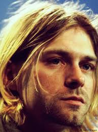
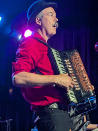
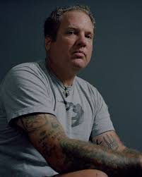

Inicio |
Membros | Museu |
Albuns |
Musicas |
Creditos |
Membros
Membros Definitivos
Membros Temporários
Kurt Cobain
|
O lendário líder, vocalista, guitarrista e principal compositor da banda. Fundou o Nirvana ao lado de Krist Novoselic em 1987. Sua voz angustiada e suas letras profundas definiram o movimento Grunge e a Geração X. |
 |
Krist Novoselic
|
O gigante baixista e cofundador da banda. Além de suas linhas de baixo marcantes que davam peso às músicas, Krist era o braço direito de Kurt e uma presença de palco inconfundível. |
 |
Dave Grohl
|
Entrou na banda em 1990 e foi o baterista definitivo. Grohl trouxe a energia explosiva e a precisão técnica que faltavam ao Nirvana, consolidando o som do álbum Nevermind. Hoje, é o líder do Foo Fighters. |
 |
Aaron Burckhard
|
O primeiro baterista oficial da banda (1987-1988). Ele tocou nos primeiros ensaios e shows suburbanos, mas acabou saindo por falta de compromisso. |
 |
Dale Crover
|
Baterista da banda Melvins. Ele quebrou um galho enorme para o Nirvana em 1988, gravando a famosa fita demo que conseguiu o contrato com a gravadora Sub Pop. |
 |
Dave Foster
|
Teve uma passagem curtíssima como baterista em 1988 (durante apenas alguns shows), sendo demitido rapidamente. |
 |
Chad Channing
|
Foi o baterista do primeiro álbum de estúdio, Bleach (1988-1990). Ele teve uma contribuição importante no início da banda, mas saiu por divergências criativas e por Kurt querer um baterista que tocasse mais pesado. |
 |
Jason Everman
|
Entrou como segundo guitarrista em 1989. Ele inclusive pagou a taxa de gravação do álbum Bleach do próprio bolso (e nunca recebeu o dinheiro de volta!). Sua vibe não bateu com a do resto do grupo e ele foi demitido após uma turnê. |
 |
Dan Peters
|
Baterista da banda Mudhoney. Ele tocou bateria no single "Sliver", mas fez apenas um show com o Nirvana antes de Dave Grohl assumir as baquetas definitivamente. |
 |
Pat Smear
|
Ex-guitarrista da banda punk The Germs. Ele foi contratado em 1993 como guitarrista de apoio para dar mais peso aos shows ao vivo e participou do icônico MTV Unplugged in New York. |
 |
Lori Goldston
|
Violoncelista que acompanhou a banda na turnê do álbum In Utero e teve uma participação brilhante e memorável no MTV Unplugged. |
 |